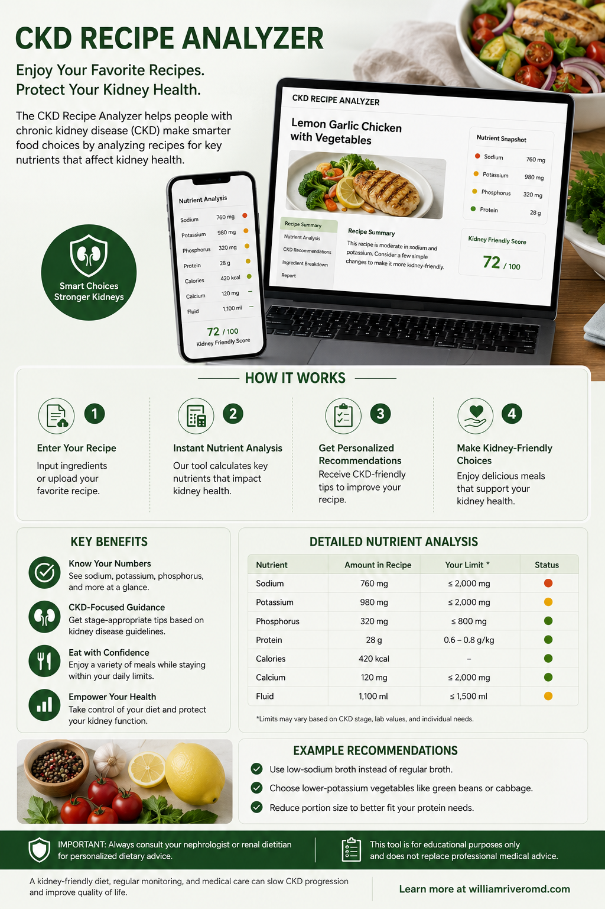
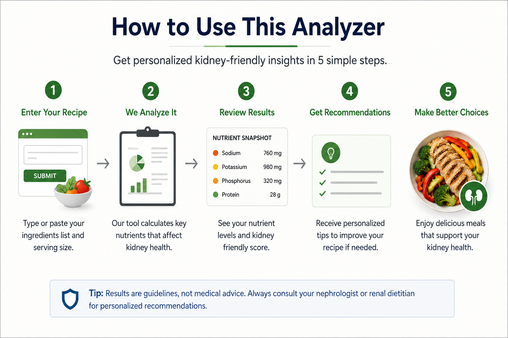

Analyze a Recipe
Mag-analyze ng Recipe
I-analyze ang Recipe
Mag-analyze ning Recipe
List your ingredients with quantities, select your CKD stage, and the analyzer will generate a Nutrition Facts label and flag any nutrients of concern for your stage.
Ilista ang iyong mga sangkap kasama ang dami, piliin ang iyong CKD stage, at ang analyzer ay gagawa ng Nutrition Facts label at magfla-flag ng anumang nutrients na dapat bantayan para sa iyong stage.
Ilista ang imong mga ingredients uban sa gidaghanon, pilia ang imong CKD stage, ug ang analyzer maghimo og Nutrition Facts label ug mag-flag sa bisan unsang nutrients nga kinahanglan bantayan para sa imong stage.
Ilista ing iyung deng sangkap kasama ing dami, piliin ing iyung CKD stage, at ing analyzer ya gagawa ning Nutrition Facts label at magfla-flag ning anumang nutrients na dapat bantayan para king iyung stage.

An overview of the CKD Recipe Analyzer, showing how it works in four steps — enter a recipe, get an instant nutrient analysis, receive personalized advice, and make kidney-friendly choices.
Recipe Nutrition Analyzer
Recipe Nutrition Analyzer
Recipe Nutrition Analyzer
Recipe Nutrition Analyzer
Estimated from a Filipino & USDA food-composition database · CKD-adjusted safety flags
Tinatantya mula sa Filipino at USDA food-composition database · CKD-adjusted safety flags
Gibana-bana gikan sa Filipino ug USDA food-composition database · CKD-adjusted safety flags
Tinatantya ibat king Filipino at USDA food-composition database · CKD-adjusted safety flags
| Ingredient | Calories | Protein | Sodium | Potassium | Phosphorus |
|---|
How to Use This Analyzer
Paano Gamitin ang Analyzer na Ito
Unsaon Paggamit Niini nga Analyzer
Paano Gamitin ing Analyzer na Ini

A five-step visual guide to using the analyzer — enter your recipe, let it analyze, review the results, read the recommendations, and make better choices — with a reminder that results are guidelines, not medical advice.
1. Enter your CKD stage
1. Ilagay ang iyong CKD stage
1. I-enter ang imong CKD stage
1. Ilagay ing iyung CKD stage
Select your current stage or dialysis modality. This activates the safety flag system — the analyzer will compare each nutrient in the recipe against your specific stage limits and flag anything that exceeds safe thresholds.
Piliin ang iyong kasalukuyang stage o dialysis modality. Ito ang mag-a-activate ng safety flag system — ikukumpara ng analyzer ang bawat nutrient sa recipe laban sa mga limit para sa iyong partikular na stage at magfla-flag ng kahit anong lumampas sa ligtas na threshold.
Pilia ang imong kasamtangang stage o dialysis modality. Kini mag-activate sa safety flag system — ang analyzer magtandi sa matag nutrient sa recipe batok sa imong piho nga stage limits ug mag-flag sa bisan unsa nga mosobra sa safe thresholds.
Piliin ing iyung kasalukuyang stage o dialysis modality. Ini ing mag-a-activate ning safety flag system — ikukumpara ning analyzer ing bawat nutrient sa recipe laban sa deng limit para king iyung partikular na stage at magfla-flag ning kahit anong lumampas sa ligtas na threshold.
2. Enter ingredients with quantities
2. Ilagay ang mga sangkap kasama ang dami
2. I-enter ang mga ingredients uban sa gidaghanon
2. Ilagay deng sangkap kasama ing dami
One ingredient per line. Include the amount and unit: "200g chicken breast," "1 tbsp patis," "2 cups rice." Filipino ingredients are recognized — use local names (sayote, kangkong, bangus, patis, bagoong). Be specific about preparation (boiled vs fried changes calorie counts significantly).
Isang sangkap lang bawat linya. Isama ang dami at unit: "200g chicken breast," "1 tbsp patis," "2 cups rice." Kinikilala ang mga Filipino ingredients — gamitin ang mga lokal na pangalan (sayote, kangkong, bangus, patis, bagoong). Maging tiyak sa paraan ng paghahanda (malaki ang pagkakaiba ng calories ng nilaga kumpara sa prito).
Usa ka ingredient matag linya. Iapil ang kantidad ug unit: "200g chicken breast," "1 tbsp patis," "2 cups rice." Ang Filipino ingredients mailhan — gamita ang lokal nga ngalan (sayote, kangkong, bangus, patis, bagoong). Espesipiko sa pag-andam (boiled vs fried lahi kaayo ang calorie counts).
Isang sangkap lang bawat linya. Isama ing dami at unit: "200g chicken breast," "1 tbsp patis," "2 cups rice." Kinikilala deng Filipino ingredients — gamitin deng lokal na pangalan (sayote, kangkong, bangus, patis, bagoong). Maging tiyak sa paraan ning paghahanda (malaki ing pagkakaiba ning calories ning nilaga kumpara king prini).
3. Read the Nutrition Facts label
3. Basahin ang Nutrition Facts label
3. Basaha ang Nutrition Facts label
3. Basahin ing Nutrition Facts label
The output mirrors the standard FDA Nutrition Facts label format — identical to what you see on packaged food. Values are per serving. Use the "Total Servings" field to divide the recipe correctly.
Ang output ay kapareho ng standard FDA Nutrition Facts label format — katulad ng makikita mo sa mga nakabalot na pagkain. Ang mga values ay per serving. Gamitin ang "Total Servings" field para hatiin nang tama ang recipe.
Ang output pareho sa standard FDA Nutrition Facts label format — pareho sa makita nimo sa mga de-pakete nga pagkaon. Ang values kay per serving. Gamita ang "Total Servings" field para mabahin og husto ang recipe.
Ing output ya kapareho ning standard FDA Nutrition Facts label format — katulad ning makikita mo sa deng nakabalot na pamangan. Deng values ya per serving. Gamitin ing "Total Servings" field para hatiin nang tama ing recipe.
4. Review CKD safety flags
4. Suriin ang mga CKD safety flags
4. Tan-awa ang CKD safety flags
4. Suriin deng CKD safety flags
The flag panel shows whether each key nutrient (sodium, potassium, phosphorus, protein, fluid) is within safe limits for your stage. Green = safe, yellow = monitor, red = exceeds limit. The ingredient breakdown shows which ingredient is the main contributor to any flagged nutrient.
Ipinapakita ng flag panel kung ang bawat pangunahing nutrient (sodium, potassium, phosphorus, protein, fluid) ay nasa loob ng ligtas na limit para sa iyong stage. Green = ligtas, yellow = bantayan, red = lampas sa limit. Ang ingredient breakdown ay nagpapakita kung aling sangkap ang pangunahing contributor sa anumang na-flag na nutrient.
Ang flag panel magpakita kung ang matag importante nga nutrient (sodium, potassium, phosphorus, protein, fluid) naa ba sa safe limits para sa imong stage. Green = safe, yellow = bantayi, red = sobra sa limit. Ang ingredient breakdown magpakita unsang ingredient ang pinaka-kontribyutor sa bisan unsang na-flag nga nutrient.
Ipinapakita ning flag panel nung ing bawat pangunahing nutrient (sodium, potassium, phosphorus, protein, fluid) ya nasa loob ning ligtas na limit para king iyung stage. Green = ligtas, yellow = bantayan, red = lampas sa limit. Ing ingredient breakdown ya nagpapakita nung aling sangkap ing pangunahing contributor sa anumang na-flag na nutrient.
Tip: Use this to modify family recipes, not just analyze them
Tip: Gamitin ito para baguhin ang mga family recipes, hindi lang para suriin ang mga ito
Tip: Gamita ni para usbon ang family recipes, dili lang i-analyze
Tip: Gamitin ini para baguhin deng family recipes, ali lang para suriin deng ini
Try analyzing a recipe first to see which ingredient is causing a problem (usually patis, soy sauce, or a high-potassium vegetable), then remove or reduce that ingredient and re-analyze to see if it becomes safe. Most traditional Filipino dishes can be made CKD-safe with small modifications — usually just reducing patis by 75% and switching to calamansi for flavor.
Subukang mag-analyze muna ng recipe para makita kung aling sangkap ang nagdudulot ng problema (kadalasan patis, toyo, o high-potassium na gulay), pagkatapos ay alisin o bawasan ang sangkap na iyon at mag-analyze ulit para makita kung magiging ligtas na. Karamihan sa mga tradisyonal na Filipino dishes ay maaaring gawing CKD-safe sa mga maliliit na pagbabago — kadalasan pagbawas lang ng patis ng 75% at pagpalit sa calamansi para sa lasa.
Sulayi og analyze ang recipe una para makita unsang ingredient ang naghatag problema (kasagaran patis, toyo, o taas-potassium nga utanon), dayon tangtanga o gamaya ang ingredient ug i-analyze balik para makita kung mahimo nang safe. Kadaghanan sa tradisyonal nga Filipino nga pagkaon mahimo nga CKD-safe uban sa gamay nga pagbag-o — kasagaran gamayan lang og 75% ang patis ug ilisan og calamansi para sa lami.
Subukang mag-analyze muna ning recipe para makita nung aling sangkap ing nagdudulot ning problema (kadalasan patis, toyo, o high-potassium na gulay), kapabanuan ya alisin o bawasan ing sangkap na iyun at mag-analyze ulit para makita nung magiging ligtas na. Karamihan sa deng tradisyonal na Filipino dishes ya maaaring gawing CKD-safe sa deng maliliit na pagbabago — kadalasan pagbawas lang ning patis ning 75% at pagpalit sa calamansi para king lasa.
CKD Nutrient Limits by Stage
CKD Nutrient Limits Ayon sa Stage
CKD Nutrient Limits Kada Stage
CKD Nutrient Limits Ayon sa Stage
These are the thresholds used to generate the safety flags. Values are per meal (assuming 3 meals/day) unless noted.
Ito ang mga threshold na ginagamit para gawin ang mga safety flags. Ang mga values ay per meal (ipinapalagay na 3 meals/araw) maliban kung nakalagay.
Mao ni ang thresholds nga gigamit sa pag-generate sa safety flags. Ang values kay per meal (nag-assume og 3 ka meals/adlaw) gawas kung gisulti.
Ini deng threshold na ginagamit para gawin deng safety flags. Deng values ya per meal (ipinapalagay na 3 meals/aldo) maliban nung nakalagay.
| Nutrient | Stage 1–2 | Stage 3a–3b | Stage 4–5 | HD | PD |
|---|---|---|---|---|---|
| Sodium (per meal) | <767 mg | <767 mg | <767 mg | <667 mg | <667 mg |
| Potassium (per meal) | No restriction | 1,000 mg | 700–800 mg | 667 mg | 750 mg |
| Phosphorus (per meal) | 400 mg | 350 mg | 300 mg | 300 mg | 300 mg |
| Protein (per meal) | Based on weight | Moderate restriction | Low (0.6–0.8 g/kg/day) | Higher (1.0–1.2 g/kg/day) | Highest (1.2–1.5 g/kg/day) |
| Fluid (per day) | Unrestricted | Unrestricted | Individualized | 500 mL + urine output | 1,500–2,000 mL |
Phosphorus additives are not captured by this tool
Hindi nakukuha ng tool na ito ang phosphorus additives
Ang Phosphorus additives dili makuha niini nga tool
Ali nakukuha ning tool na ini ing phosphorus additives
The analyzer estimates naturally occurring phosphorus in whole food ingredients. Inorganic phosphate additives in processed ingredients (patis, instant noodle sachets, processed meats, canned goods) are absorbed at 90–100% vs 40–60% for natural food phosphorus. The real phosphorus burden from processed ingredients is always higher than calculated. When in doubt, choose fresh ingredients.
Ang analyzer ay nagtatantya ng natural na phosphorus sa mga buong pagkain. Ang inorganic phosphate additives sa mga processed ingredients (patis, instant noodle sachets, processed meats, de-lata) ay naa-absorb ng 90–100% kumpara sa 40–60% para sa natural food phosphorus. Ang totoong phosphorus burden mula sa processed ingredients ay palaging mas mataas kaysa sa kinalkula. Kapag hindi sigurado, pumili ng mga sariwang sangkap.
Ang analyzer nag-estimate sa natural nga phosphorus sa whole food ingredients. Inorganic phosphate additives sa processed ingredients (patis, instant noodle sachets, processed meats, de-lata) gi-absorb sa 90–100% kompara sa 40–60% para sa natural food phosphorus. Ang tinuod nga phosphorus burden gikan sa processed ingredients kanunay mas taas kay sa gi-calculate. Kung nagduda, pilia ang fresh ingredients.
Ing analyzer ya nagtatantya ning natural na phosphorus sa deng buoning pamangan. Ing inorganic phosphate additives sa deng processed ingredients (patis, instant noodle sachets, processed meats, de-lata) ya naa-absorb ning 90–100% kumpara king 40–60% para king natural food phosphorus. Ing totoong phosphorus burden mula sa processed ingredients ya papirming mas mataas kaysa sa kinalkula. Nung ali sigurado, pumili ning deng sariwang sangkap.
CKD-Safe Filipino Cooking Tips
Mga Tip sa CKD-Safe na Filipino Cooking
CKD-Safe Filipino nga mga Tip sa Pagluto
Deng Tip sa CKD-Safe na Filipino Cooking
Reducing sodium without losing flavor
Pagbabawas ng sodium nang hindi nawawala ang lasa
Pagkunhod sa sodium nga dili mawala ang lami
Pagbabawas ning sodium nang ali nawaala ing lasa
Replace patis tablespoon-for-tablespoon with: calamansi + a tiny pinch of salt (1/8 tsp = 300 mg vs patis 1,400 mg/tbsp). Use fresh ginger, garlic, and sibuyas tagalog generously — these are low-sodium and high-flavor. Avoid toyo, bagoong, and MSG-based seasoning cubes entirely on dialysis.
Palitan ang patis tablespoon-for-tablespoon ng: calamansi + kaunting asin (1/8 tsp = 300 mg kumpara sa patis 1,400 mg/tbsp). Gumamit ng maraming sariwang luya, bawang, at sibuyas tagalog — low-sodium ang mga ito at matapang ang lasa. Iwasan ang toyo, bagoong, at MSG-based seasoning cubes kapag nasa dialysis.
Ilisan ang patis tablespoon-for-tablespoon og: calamansi + gamay kaayo nga asin (1/8 tsp = 300 mg vs patis 1,400 mg/tbsp). Paggamit og daghan nga fresh luya, ahos, ug sibuyas tagalog — kini ubos-sodium ug taas-lami. Likayi ang toyo, bagoong, ug MSG-based seasoning cubes sa dialysis.
Palitan ing patis tablespoon-for-tablespoon ng: calamansi + kaunting asin (1/8 tsp = 300 mg kumpara king patis 1,400 mg/tbsp). Gumamit ning dacal a sariwang luya, bawang, at sibuyas tagalog — low-sodium deng ini at matapang ing lasa. Iwasan ing toyo, bagoong, at MSG-based seasoning cubes nung nasa dialysis.
Leaching high-potassium vegetables
Pag-leach ng high-potassium na mga gulay
Pag-leach sa taas-potassium nga mga utanon
Pag-leach ning high-potassium na deng gulay
Peel and dice → soak in large volume of water ≥2 hours → drain fully → boil in fresh water → drain again before eating. Reduces potassium by 30–50%. Apply to: kamote, kalabasa, patatas, saging na saba. Do not drink the soaking or boiling water.
Balatan at hiwain → ibabad sa maraming tubig nang ≥2 oras → patuluin nang husto → pakuluan sa bagong tubig → patuluin ulit bago kainin. Nakababawas ng potassium ng 30–50%. Gawin ito sa: kamote, kalabasa, patatas, saging na saba. Huwag inumin ang tubig na pinagbabaran o pinagpakuluan.
Panita ug hiwa-hiwaa → ituslob sa dakong tubig sulod sa ≥2 ka oras → hugas-a pag-ayo → lag-a sa bag-ong tubig → hugas-a pag-usab sa dili pa kaonon. Makunhuran ang potassium og 30–50%. Magamit sa: kamote, kalabasa, patatas, saging na saba. Ayaw imna ang tubig nga gituslob o gilaug-an.
Balatan at hiwain → ibabad sa maramining danum nang ≥2 oras → patuluin nang husto → pakuluan sa bagoning danum → patuluin ulit bago kainin. Nakababawas ning potassium ning 30–50%. Gawin ini sa: kamote, kalabasa, patatas, saging na saba. Eka inumin ining danum na pinagbabaran o pinagpakuluan.
Best CKD-safe Filipino ingredients
Pinakamainam na sangkap na ligtas sa CKD para sa lutuing Pilipino
Pinakamaayo nga mga sangkap para sa CKD
Pinakamainam na sangkap na ligtas sa CKD para king lutuing Pilipino
Low K, Low P, Low Na: sayote (chayote), ampalaya (bitter gourd), upo, labanos, cabbage, green beans (sitaw), kangkong (small portions). Good protein sources: egg whites (no yolk = no phosphorus), lean chicken (breast, no skin), tilapia, bangus (rinse to reduce sodium).
Mababa sa K, P, at Na: sayote (chayote), ampalaya (bitter gourd), upo, labanos, repolyo, sitaw (green beans), kangkong (maliit na dami lamang). Magagandang pinagkukunan ng protina: puti ng itlog (walang bula = walang phosphorus), manok na walang taba (dibdib, walang balat), tilapia, bangus (hugasan para mabawasan ang sodium).
Ubos K, Ubos P, Ubos Na: sayote (chayote), ampalaya (bitter gourd - pait nga tanom), upo, labanos, repolyo, sitaw, kangkong (gamay nga gidaghanon). Maayo nga tinubdan sa protein: puti sa itlog (walay pula = walay phosphorus), manok nga walay tabas (dughan, walay panit), tilapia, bangus (hugasi aron makunhuran ang sodium).
Mababa sa K, P, at Na: sayote (chayote), ampalaya (bitter gourd), upo, labanos, repolyo, sitaw (green beans), kangkong (maliit na dami lamang). Magagandang pinagkukunan ning protina: puti ning itlog (alang bula = alang phosphorus), manok na alang taba (dibdib, alang balat), tilapia, bangus (hugasan para mabawasan ing sodium).
Ingredients to minimize or avoid
Mga sangkap na dapat bawasan o iwasan
Mga sangkap nga angay kunhuran o likayan
Deng sangkap na dapat bawasan o iwasan
High sodium: patis, toyo, bagoong, magic sarap, instant soups, processed longanisa, tocino, canned sardines in brine. High potassium: saging (all types), buko juice, kamote, avocado, tomato sauce, kamatis in large amounts. High phosphorus: nuts, beans, dairy, colas, whole grains in excess.
Mataas sa sodium: patis, toyo, bagoong, magic sarap, instant na sopas, processed na longganisa, tocino, sardinas sa lata na may salty brine. Mataas sa potassium: saging (lahat ng klase), buko juice, kamote, avocado, tomato sauce, kamatis kapag marami. Mataas sa phosphorus: nuts, beans, gatas at produktong gawa sa gatas, mga cola, sobrang daming whole grains.
Taas og sodium: patis, toyo, bagoong, magic sarap, instant nga sabaw, processed nga longanisa, tocino, de lata nga sardinas sa brine. Taas og potassium: saging (tanang klase), buko juice, kamote, avocado, tomato sauce, kamatis sa daghang gidaghanon. Taas og phosphorus: mga nuts, beans, gatas ug gikan sa gatas, colas, sobra nga whole grains.
Mataas sa sodium: patis, toyo, bagoong, magic sarap, instant na sopas, processed na longganisa, tocino, sardinas sa lata na may salty brine. Mataas sa potassium: saging (lahat ning klase), buko juice, kamote, avocado, tomato sauce, kamatis nung marami. Mataas sa phosphorus: nuts, beans, gatas at produktong gawa sa gatas, deng cola, sobrang daming whole grains.